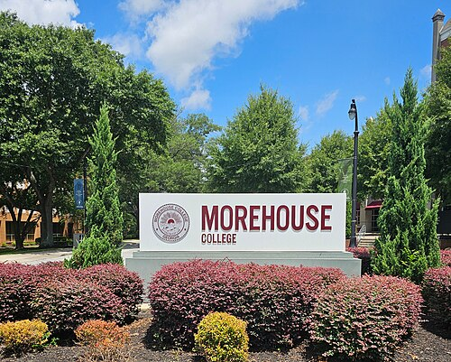

About Me
My research lies at the intersection of dynamical systems, numerical analysis, and computational mathematics, with applications across the natural and physical sciences.
When I'm not immersed in my work, I enjoy spending time with
my family and exploring the connections between mathematics and
the world around us.
- Research Interests
- Dynamical Systems
- Numerical Methods for ODEs and PDEs
- Computation of Smooth Invariant Manifolds
- Computer Assisted Proof in Dynamics
- Data Assimilation
- Mathematical Biology
Education
Florida Atlantic University (FAU)
Fall 2021
Doctor of Philosophy, Mathematics
Co-advisors: Dr. J.D. Mireles James and Dr. V. Naudot.
Dissertation title: Formation, evolution, and breakdown of invariant tori in dissipative systems: from visualization to computer assisted proofs. Successful defense October 8, 2021.
Florida Atlantic University (FAU)
Spring 2018
Master of Science, Mathematics
Advisor: Dr. Jason Mireles-James.
Thesis title: On the study of the Aizawa system. Successful defense March 29, 2018.
Teaching Experience at Morehouse College
Set Theory (HMTH 255)
Fall 2026
Calculus II (HMTH 162)
Fall 2026
Teaching/Mentorship Experience at GMU
Numerical Analysis I (MATH 446)
Summer 2026
Numerical Analysis II (MATH 447/CDS 410)
Spring 2026
Mathematical Statistics (MATH 352)
Fall 2025
Computational Dynamics (MATH 689)
Spring 2024
Introduction to Applied Math (MATH 314)
Spring 2023
MEGL Undergraduate Research (MATH 491)
Fall 2022, Fall 2024, Spring 2025, Fall 2025, Spring 2026, Summer 2026
Teaching Experience at FAU
Introduction to Calculus with Applications (MAC 2210)
Fall 2021
Calculus 1 (MAC 2311)
Fall 2020
Methods of Calculus (MAC 2233)
Spring 2017, Spring 2019, Spring 2021
Introductory Statistics (STA 2023)
Fall 2017, Spring 2018, Spring 2020
Precalulus Algebra (MAC 1140)
Summer 2018, Fall 2018
Trigonometry (MAC 1114)
Summer 2017
College Algebra (MAC 1105)
Fall 2016, Fall 2019
Intermediate Algebra (MAT 1033)
Summer 2021 (Second half)
Matrix Theory (MAS 2103) - Teaching assistant
Summer 2020 (first half)
Calculus 3 (MAC 2313), Engineering Math 1 (MAP 3305) - Teaching assistant
Summer 2019
Calculus 1 (MAC 2311) - Teaching assistant
Fall 2018
Advising and Training
Faculty Mentor
Mason Experimental Geometry Lab (MEGL) project "Graphons and Network Dynamical Systems" (Fall 2025, Spring 2026, Summer 2026) [poster] [arXiv]
Faculty Mentor
Mason Experimental Geometry Lab (MEGL) project "Existence and Stability of Traveling Waves in Heterogeneous Reaction-Diffusion Systems" (Fall 2024, Spring 2025) [poster]
Faculty Mentor
Project on using data-assimilation on a low-order climate model (Fall 2023, Spring 2024) [arXiv]
Faculty Mentor
Mason Experimental Geometry Lab (MEGL) project "Tipping in Climate Impact Models" (Fall 2022) [poster]
Colloquia, Special Sessions, Minisymposia, and Workshop Organization
Co-Organizer
Minisymposium on The Shape of Motion: Bridging Dynamical Systems and Topological Data Analysis at the Joint Mathematics Meetings (JMM) in January 2027 in Chicago, IL
Organizer
Dynamics, Networks, and Complex Systems: A Minisymposium Celebrating Diversity in Mathematics at the third joint SIAM/CAIMS annual meetings (AN25)
Co-Organizer
Minisymposium on Tipping in Complex Systems: Theory and Applications at the 2025 SIAM Conference on Applications of Dynamical Systems
Co-Organizer
Minisymposium on Stability of Traveling Waves - Theoretical and Numerical Methods at the 2024 SIAM Conference on Nonlinear Waves and Coherent Structures
Co-Organizer
AMS Special Session on Recent Developments in Nonlinear and Computational Dynamics at the 2024 Spring Eastern Sectional Meeting
Co-Organizer
SIAM Minisymposium on
Applications of the Maslov Index at the Joint Mathematics Meetings (JMM) in January 2023 in Boston, MA
Research Support, Fellowships and Awards
FAU Graduate Grant
Summer 2021
Travel Award for NSF-CBMS Conference: Fitting Smooth Functions to Data
August 2019
Travel Award to Visit Université de Lilles, France
December 2018
Service and Scholarly Activities
Journal Referee
Chaos: An Interdisciplinary Journal of Nonlinear Science, Communications in Nonlinear Science and Numerical Simulation (CNSNS), International Journal of Bifurcation
and Chaos (IJBC), SIAM Journal on Applied Dynamical Systems (SIADS), Physica D: Nonlinear Phenomena, Mathetical Biosciences, Nonlinearity
External Dissertation Committee Member
George Mason University (May 2026-present)
Advisory Board Member
ASCEND Mentor Network supporting NSF postdocs (December 2024-May 2025)
Qualifying Exam Committee Member
George Mason University (Summer 2024)
President
Society of Industrial and Applied Mathematics local student chapter (August 2020-August 2021)
Professional and Research Communities Memberships
American Mathematical Society (AMS)
Society for Industrial and Applied Mathematics (SIAM)
Mathematical Association of America (MAA)
Mathematics and Climate Research Network (MCRN)
Coding Skills
MATLAB
C++
Python
Mathematica
Linux
Selected Conferences, Workshops, Schools, or Visits
14th IMACS Intl. Conference on Nonlinear Evolution Equations and Wave Phenomena: Computation and Theory
March 2027
Athens, GA
Joint Mathematics Meetings 2027
January 2027
Chicago, IL
AMS Fall Southeastern Sectional Meeting
October 2026
Kennesaw State University
SIAM Mathematics of Planet Earth Conference (SIAM MPE 2026) -- SIAM Annual Meeting (AN26)
July 2026
Cleveland, Ohio
AMS Spring Eastern Sectional Meeting
March 2026
Boston College
Joint Mathematics Meetings 2026
January 2026
Washington, D.C.
SIAM Conference on Analysis of Partial Differential Equations (PD25)
November 2025
Pittsburgh, PA
Data Meets Dynamics: Workshop on Data Assimilation for Complex Systems and Applications
August 2025
University of Wisconsin-Madison
2025 joint SIAM/CAIMS annual meetings (AN25)
July 2025
Montréal, Québec, Canada
2025 SIAM Conference on Applications of Dynamical Systems
May 2025
Denver, CO
13th IMACS Intl. Conference on Nonlinear Evolution Equations and Wave Phenomena: Computation and Theory
April 2025
Athens, GA
Workshop on the Mathematics of Climate Tipping Points and their Impacts
March 2025
Hosted at the International Centre for Mathematical Sciences (ICMS)
Workshop on Patterns, Dynamics, and Data in Complex Systems
January 2025
Providence, RI
SIAM Washington-Baltimore Section Fall Meeting
December 2024
Arlington, VA
ICERM Blackwell-Tapia Conference
November 2024
Providence, RI
3rd ASCEND Mentor Network Fellowship
Conference
October 2024
Hosted at Vanderbilt University
SIAM Annual Meeting (AN24)
July 2024
Spokane, WA
Conference for African-American Researchers in the Mathematical Sciences (CAARMS) 2024
June 2024
hosted at Tufts University
SIAM Conference on Nonlinear Waves and Coherent Structures
June 2024
Baltimore, MD
AMS Spring Eastern Sectional Meeting
April 2024
hosted at Howard University
Mathematics in Digital Twins (MATH-DT Workshop)
December 2023
Hosted at George Mason University (Arlington Campus)
16th Annual Symposium on BEER (Biomathematics and Ecology Education and Research)
November 2023
Hosted at Virginia Commonwealth University
Non-autonomous Dynamics in Complex Systems: Theory and Applications to Critical Transitions (NADCOM23)
October 2023
Hosted at the Max Planck Institute for the Physics of Complex Systems
2nd ASCEND Mentor Network Fellowship
Conference
October 2023
Hosted at Iowa State University
International Congress on Industrial and Applied Mathematics (ICIAM)
August 2023
Hosted at Waseda University
Workshop on Computer Assisted Proofs for Stability Analysis of Nonlinear Waves
June 2023
San Jose, CA
The 13th AIMS Conference on Dynamical Systems,
Differential Equations and Applications
June 2023
Wilmington, NC
SIAM Conference on Applications of Dynamical Systems
May 2023
Portland, OR
East Coast Optimization Meeting 2023 (virtual)
April 2023
Hosted by George Mason University (GMU)
1st ASCEND Mentor Network Fellowship
Conference
February 2023
Hosted by Carnegie Mellon University (CMU)
Spring Opportunities Workshop 2023
January 2023
Hosted by the Institute for Advanced Study (IAS)
Joint Mathematics Meetings 2023
January 2023
Boston, MA
M@TH Hub Mini-Conference
December 2022
Hosted by the Georgia Institute of Technology
SIAM Washington-Baltimore Section Fall meeting
November 2022
Arlington, VA
SIAM Mathematics of Planet Earth Conference 2022 (SIAM MPE 2022)
July 2022
Pittsburgh, PA
Dynamics, Topology and Computations 2022 (DyToComp 2022)
June 2022
Bedlewo, Poland
Visit to Brigham Young University, Department of Mathematics
Feb 2022
Worked with Dr. Blake Barker
SIAM Annual Meeting (virtual)
July 2021
SIAM Conference on Applications of Dynamical Systems (virtual)
May 2021
formerly in Portland, OR
AMS Spring Southeastern Sectional Meeting (virtual)
March 2021
Hosted by the Georgia Institute of Technology
Mathematical Models for Prediction and Control of Epidemics (virtual)
Aug 2020
Hosted by the Mathematical Sciences Research Institute (MSRI)
AIM/MCRN Summer School on Dynamics, Data, and the COVID 19 Pandemic (virtual)
June-July 2020
Hosted at the American Institute of Mathematics, San Jose, California.
39th Southeastern-Atlantic Regional Conference on Differential Equations (SEARCDE)
Oct 2019
Hosted at ERAU, Daytona Beach, Florida.
NSF-CBMS Regional Research Conference: Fitting Smooth Functions to Data
Aug 2019
Hosted at the University of Texas at Austin.
Preprints
- Justin Arches, Emmanuel Fleurantin, Matt Holzer, Shakeeb Uddin, and Siddhant Sood, Predicting the occurrence of Braess paradox in the synchronization threshold of coupled oscillator systems. Submitted (2026). (pdf here)
- Blake Barker, Emmanuel Fleurantin, Matt Holzer, Christopher K.R.T. Jones and Sebastian Wieczorek, Rate-Induced Tipping in a Non-Uniformly Moving Habitat and Determination of the Critical Rate. In revision with SIADS (2026). (pdf here)
- Patrick Bishop, Summer Chenoweth, Emmanuel Fleurantin, Evelyn Sander and Jason Mireles-James, Dynamics of Perturbed Elliptic Billiard Tables. In revision with SIADS (2026). (pdf here)
- Emmanuel Fleurantin, Jeremy Marzuola, Christopher K.R.T. Jones, On the Spectrum of Schrödinger Operators Interacting at two Distinct Scales. In revision with Journal of Spectral Theory (2026). (pdf here)
Publications
- Patrick Bishop, Summer Chenoweth, Emmanuel Fleurantin, Alonso Ogueda-Oliva, Evelyn Sander, Julia Seay, 3D Printing of Invariant Manifolds in Dynamical Systems. Notices Amer. Math. Soc. 73, no. 1, doi:10.1090/noti3288 (2026). (pdf here)
- Katherine Slyman, Emmanuel Fleurantin, Christopher K.R.T. Jones, Tipping Mechanisms in a Carbon Cycle Model. Chaos: An Interdisciplinary Journal, 35 (5): 053104. doi:10.1063/5.0241550 (2025). (pdf here)
- Nathaniel Smith, Anvaya Shiney-Ajay, Emmanuel Fleurantin, Ivo Pasmans, Investigating ocean circulation dynamics through data assimilation: A mathematical study using the Stommel box model with rapid oscillatory forcings. Chaos: An Interdisciplinary Journal, 34 (10): 103131, doi:10.1063/5.0215236 (2024). (pdf here)
- Julie Sherman, Christian Sampson, Emmanuel Fleurantin, Zhimin Wu, Christopher K.R.T. Jones, A Data Driven Study of the Drivers of Stratospheric Circulation via Reduced Order Modeling and Data Assimilation. Meteorology, 3 (1): 1-35, doi: 10.3390/meteorology3010001 (2024). (pdf here)
- Emmanuel Fleurantin, Katherine Slyman, Blake Barker, Christopher K.R.T. Jones, A Dynamical Systems Approach for Most Probable Escape Paths over Periodic Boundaries. Physica D: Nonlinear Phenomena, 454:133860, doi: 10.1016/j.physd.2023.133860 (2023). (pdf here)
- Emmanuel Fleurantin, Christian Sampson, Daniel Paul Maes, Justin Bennett, Tayler Fernandes-Nunez, Sophia Marx and Geir Evensen , A study of disproportionately affected populations by race/ethnicity during the SARS-CoV-2 pandemic using multi-population SEIR modeling and ensemble data assimilation, Foundations of Data Science, Vol. 3, No. 3, pp. 479-541, doi: 10.3934/fods.2021022 (2021). (pdf here)
- Maciej J. Capinski, Emmanuel Fleurantin, Jason D. Mireles-James, Computer Assisted Proofs of Two-Dimensional Attracting Invariant Tori for ODEs, Discrete and Continuous Dynamical Systems-A, Vol. 40, No. 12, pp.6681-6707, doi: 10.3934/dcds.2020162 (2020). (pdf here)
- Emmanuel Fleurantin, Jason D. Mireles James, Resonant Tori, Transport Barriers, and Chaos in a Vector Field with a Neimark-Sacker Bifurcation, Communications in Nonlinear Science and Numerical Simulation, Volume 85, 105226, ISSN 1007-5704, doi: 10.1016/j.cnsns.2020.105226 (2020). (pdf here)
- Catherine I. Berrouet, Jacob Nadulek, Emmanuel Fleurantin, Sunil Giri, Katarzyna A. Rejniak, Necibe Tuncer, A Mathematical Model Based on IC50 Curves To Predict Tumor Responses to Drugs, FAU Undergraduate Research Journal, Vol 7, pp. 18–32 (2018). (pdf here)
Current Research Projects
- Counting Gap Eigenvalues for the Perturbed 3D Nonlinear Schrödinger Equation by a Maslov Index, with Jeremy Marzuola and Christopher K.R.T. Jones.
- Computer-Assisted Proofs of Homoclinic Tangles in Nearly-Elliptical Billiards, with Maciej Capiński, Jason Mireles-James and Evelyn Sander.

Photo: OneofaKind25, Wikimedia Commons, CC BY-SA 4.0